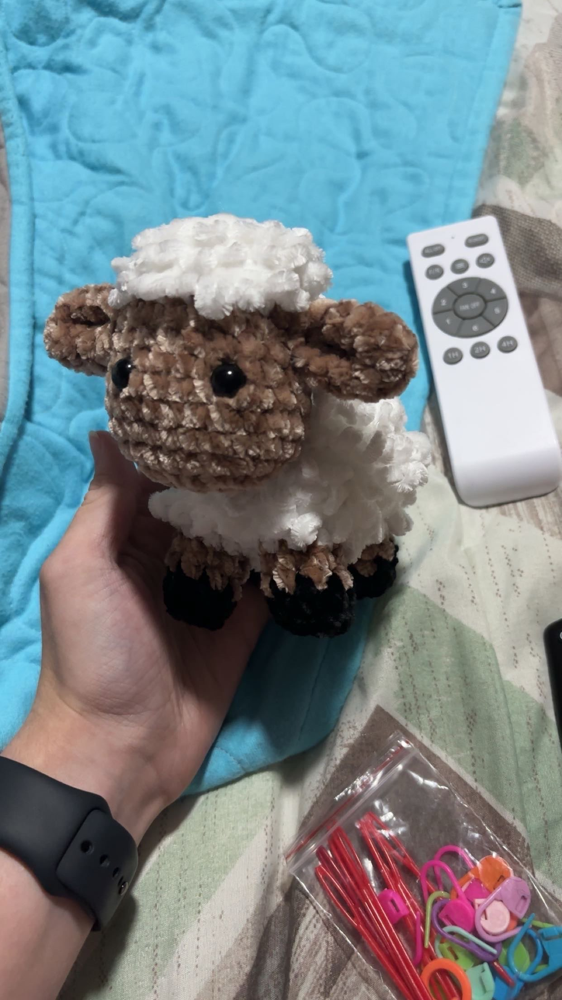
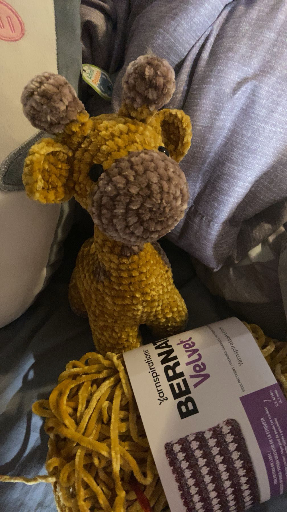
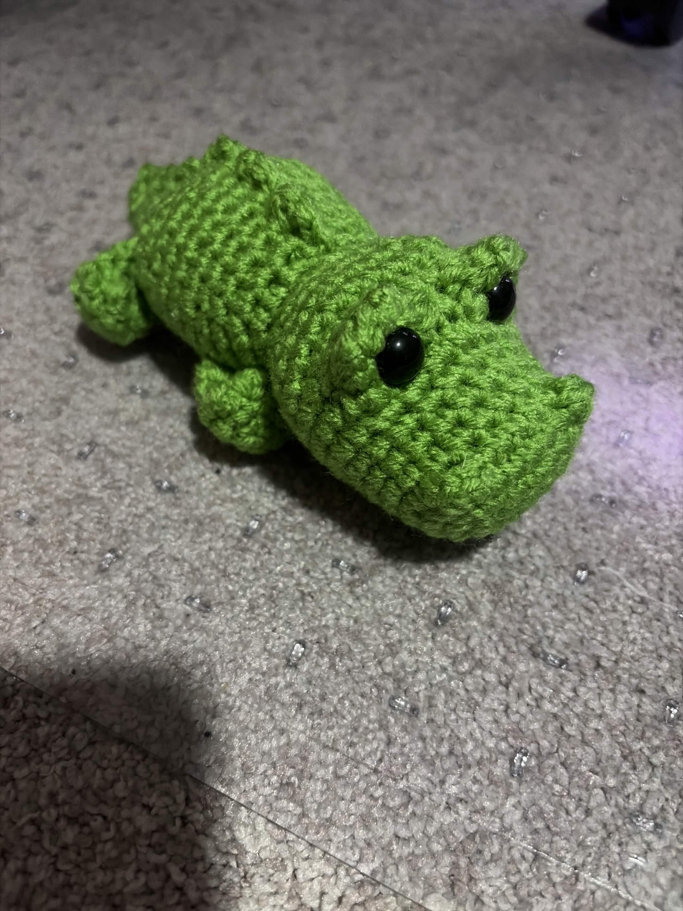
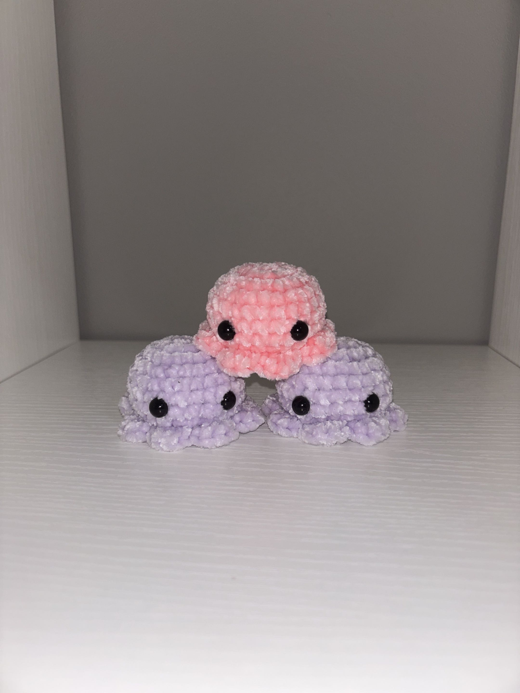

Amigurumi
What Is Amigurumi?
Amigurumi is a type of crocheting where you make different animals. These work up fairly quickly, especially if you find a pattern that is "no sew" or "low sew", which means you are not making as many parts seperately to sew on later. Typically you crochet it as one piece, with sometimes attatching limbs as you go.
This type of crocheting is what I typically enjoy because I can make a cute animal in just a few hours. However, a lot of counting is involved in this type of crocheting because you want to make sure everything can line up properly.
Some Popular Amigurumi Projects
- Sheep
- Giraffes
- Crocodiles
- Little octopi



